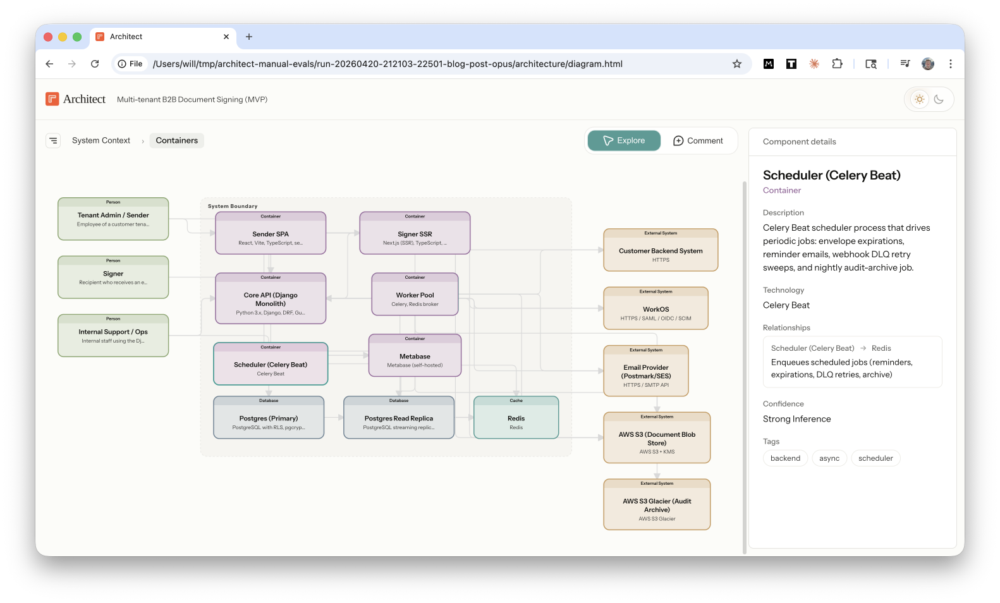
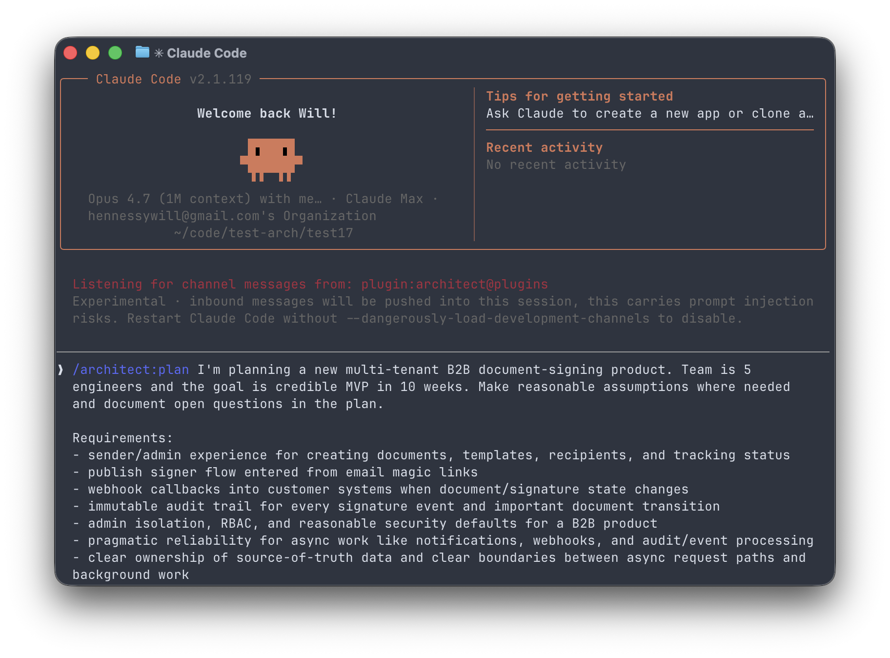
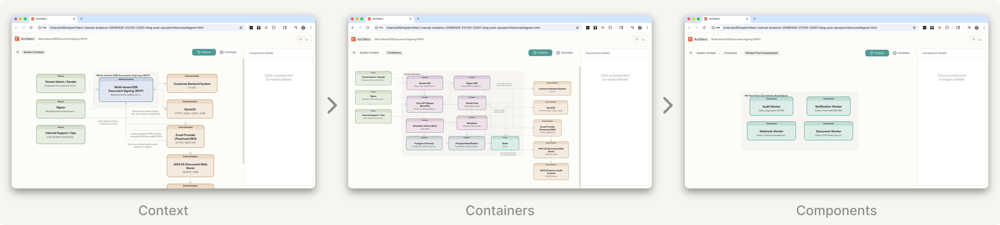
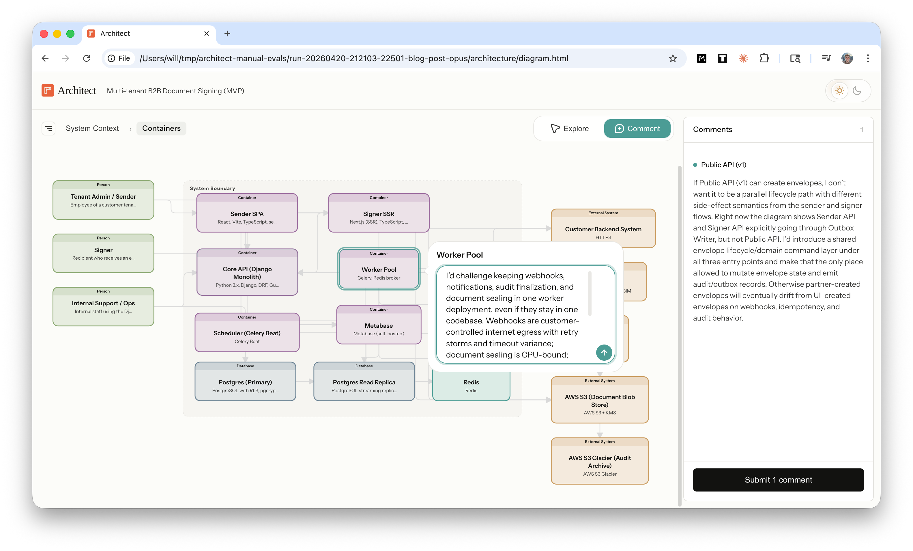
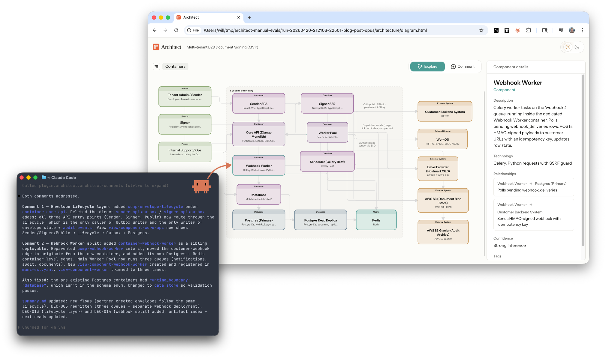

Steering agents in production systems
Coding agents can one-shot a prototype, but when you're building a production system they need a lot of steering. That steering usually falls into three buckets:
- cross-component context: "after refactoring Component A, go update Component B which calls it"
- production requirements: "add a load balancer here" or "put a cache there"
- confidence checks: "will this actually hold up at 50 QPS in prod?"
The local implementation is often fine, but steering is needed to transfer full system context and production constraints from your head into the agent’s plan. After a full day of back-and-forth in the terminal, that overhead starts to feel like its own job.
Diagrams: a better interface for system design
What if Plan Mode felt more like a whiteboard session?
Whiteboards are a great tool for system design because you can quickly grok the entire architecture, spot relationships that are easy to miss in text, and debate specific components in context of the whole system. They result in clear decisions and usually leave you feeling energized.
Steering agents through diagrams
I built the Claude Architect plugin to make Plan Mode feel more like a whiteboard session. The plugin generates an interactive architecture diagram during Plan Mode so you can review, annotate, and revise the plan with Claude in real time.

The steering loop feels like a whiteboard session:
- review the architecture and see relationships at a glance
- drill down into containers and components to review each layer
- comment directly on any node or edge
- review updates from Claude in response to your comments
Under the hood, Claude builds a semantic model of the system architecture using the C4 model, writes it to structured YAML files, and renders those files in an interactive diagram. Your comments are sent back to Claude through a local Channel, and then Claude updates both the plan and diagram in real time.
You interact with a visual diagram and Claude reads structured YAML files.
Demo
Let's walk through a demo. We'll design a new multi-tenant B2B document-signing platform.
1. Start planning
Switch to Plan Mode and give Claude your requirements.

Claude writes the plan as usual, and then asksDo you want to review an interactive architecture diagram?
Yes.
Review the diagram
Claude generates the diagram and opens it in your browser. You can inspect nodes to see more detail, hover over edges to see their function, and drill down into four layers: context, containers, components, and code.
Try the live demo for yourself!

Comment on the diagram
Toggle on Comment mode (C) to add feedback directly to any node or edge in the architecture. Each comment is associated with the element ID so Claude receives your feedback in context.

Claude incorporates your feedback
Claude receives your comments through a Channel, processes them in the terminal, updates the plan doc, and re-renders the diagram with your feedback. This isn’t limited to small tweaks either: Claude can add new components, refactor containers, or rewrite the entire system.

Beyond planning
You exit Plan Mode with two durable artifacts.
- Structured YAML files encode your architecture in an agent-readable format. Next, I'm going to research if these files help agents work more effectively in large scale codebases.
- Visual diagrams illustrate your architecture in human-readable format to help your teammates operate with the full system in view.
Text for agents; diagrams for humans.
High bandwidth interfaces
The design principle behind Architect is to increase the communication bandwidth between you and Claude.
By bandwidth, I mean how much context can flow between the engineer and the agent per unit of effort. Simple projects require very little bandwidth; a short prompt is often enough. Large production systems need much higher bandwidth to communicate system boundaries, production constraints, real-world edge cases, and risks that an experienced engineer knows to look for.
Architecture diagrams increase read bandwidth. Instead of paging through a long text plan, you can see the system at a glance, understand the major relationships, and spot the high-leverage places to direct your attention with less cognitive load.
Interactive comments increase write bandwidth. Instead of restating component names in every round of chat, you can comment directly on the node. A fully interactive canvas would unlock even more bandwidth.
Agents give you leverage, but interfaces determine how much of it you can actually use. Legible plans make the important decisions easier to spot. In-context feedback lowers the friction of steering. The result is a faster, tighter iteration loop between you and Claude.
What's next
Powerful models have made chat interfaces feel magical, but this prototype was a reminder that interface design still matters because agents perform much better when humans understand the plan and steer it well. Last week's Claude Design launch is another good example of how much interface design can shape agent performance. I expect a lot more experimentation in agent interfaces this year.
Next, I'll be adding more features and exploring research questions:
- What parts of Plan Mode are better done in a diagram vs. a text doc?
- Does the codified architecture model help coding agents operate more effectively in large codebases by providing a high level map of the system?
- Can we use the architecture model to establish useful guardrails that mitigate architecture drift as agents operate in large codebases?
Try it out
Install the architect plugin:
claude plugin marketplace add https://github.com/willhennessy/architect.git
claude plugin install architect@plugins
Run Claude with a flag to enable the comments Channel:
claude --dangerously-load-development-channels plugin:architect@plugins
Then switch to plan mode and invoke the architect skill:
/architect:plan <prompt>
Or generate a diagram for your existing codebase with /architect:init
I'd love to hear your feedback. How accurate was the architecture? What comments did you give Claude? What features do you want to see next?